ロゴデザイン提案 — 全70パターン
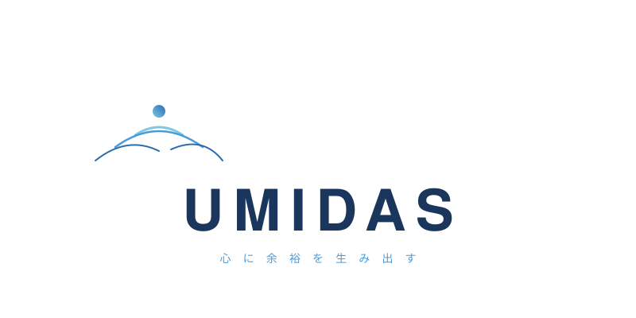
水滴が落ちた瞬間に広がる波紋をモチーフに。一つの誠実な行動が大きな変化を生み出す。最外周が途切れていることで「まだ広がり続ける」可能性を暗示。旧社名ロゴ（波紋）の精神的継承。
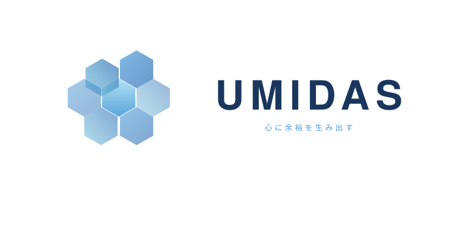
海ガメの甲羅パターンを六角形で抽象化。一見幾何学模様、よく見ると海ガメ。社内文化（幹部＝海ガメ、新人＝卵）と深く結びつく。六角形はハニカム構造＝効率性＝コスト削減も暗示。
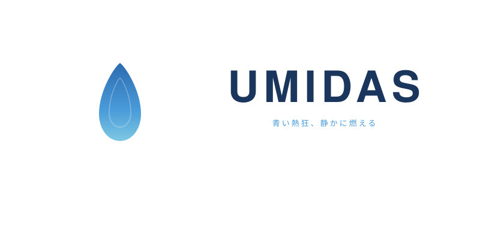
水滴が上昇する瞬間。水でありながら炎のように上へ向かう。静かだが完全燃焼する「青い熱狂」を形にした。上野氏がセッション中に共感した概念の直接表現。
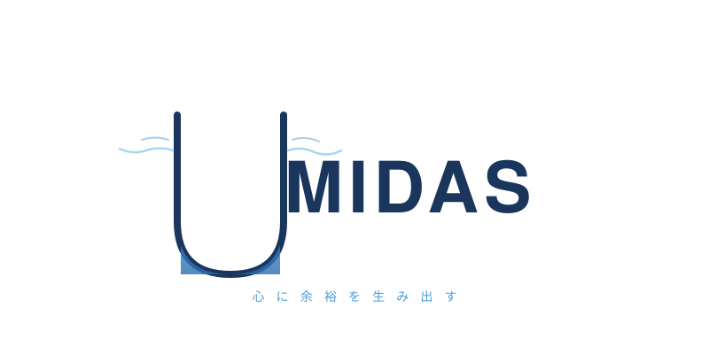
UMIDASの頭文字「U」を器に見立て、そこから水が溢れ出す。「心に余裕を生み出す」の直接的ビジュアル化。MIDASはギリシャ神話の「触れるもの全てを価値に変えるミダス王」のダブルミーニング。
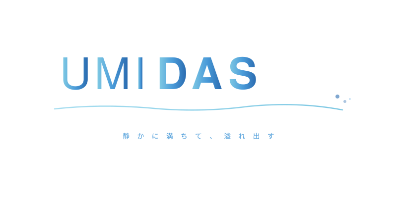
文字の太さが左（U=細い）から右（S=太い）へ徐々に変化するグラデーション書体。読み進めると「溢れ出す」感覚。Sの右から水滴が飛び出すアクセント。文字自体がデザインになるトライジン型。
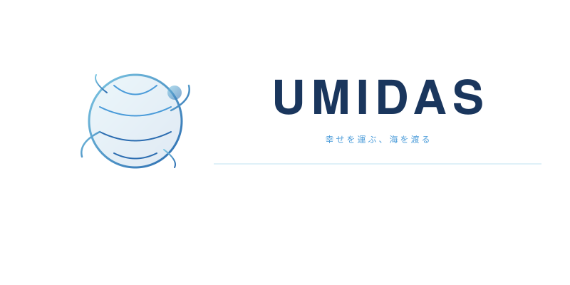
海ガメを線画で抽象化。甲羅は波のラインパターンで構成。直接的なイラストではなく、ラインアートとしてスタイリッシュに昇華。海ガメモチーフをしっかり出しつつ、ハワイ感を抑制。
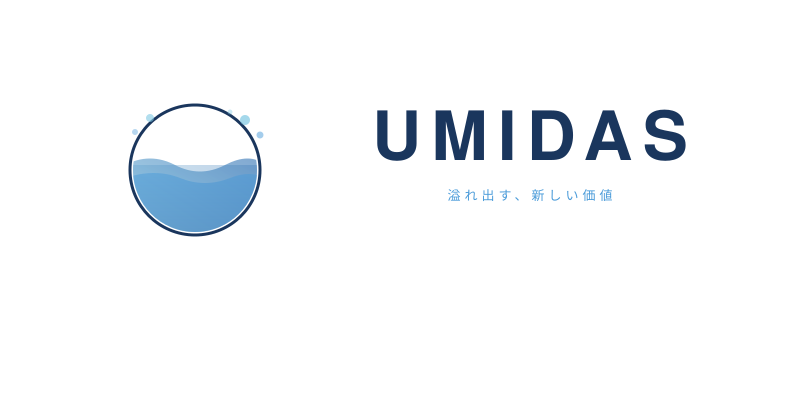
円形の器の中に海面を配置し、そこから水滴が飛び出す。「満たされて溢れ出す」状態の直接表現。円は調和・信頼の象徴。水滴が円の外に飛び出すことで、枠を超えた成長を表現。
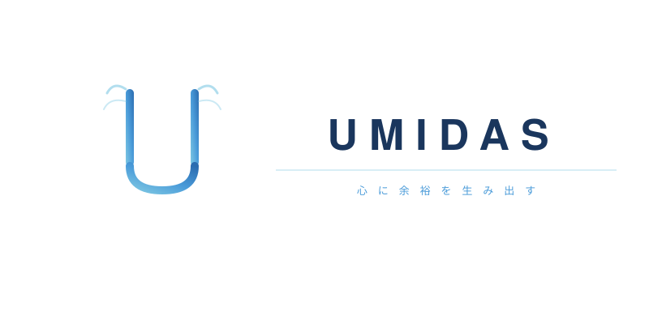
「U」をスタイリッシュなモノグラムとして大きく配置し、シンボルマーク化。Uの器から左右に水が溢れ出すラインで動きを加える。コックピット社のようなマーク+テキストの王道構成。
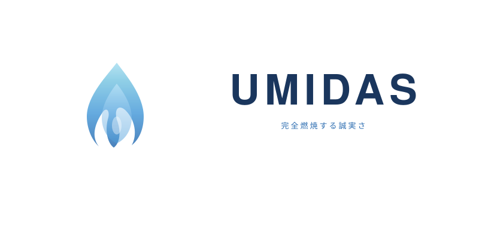
青い炎をモチーフに。赤い炎は不完全燃焼、青い炎は完全燃焼。静かに見えて実は最も高温＝静かだが最も本気。上野氏の「青い熱狂」セッションから直接インスパイア。内部のグラデーションで奥行きを表現。
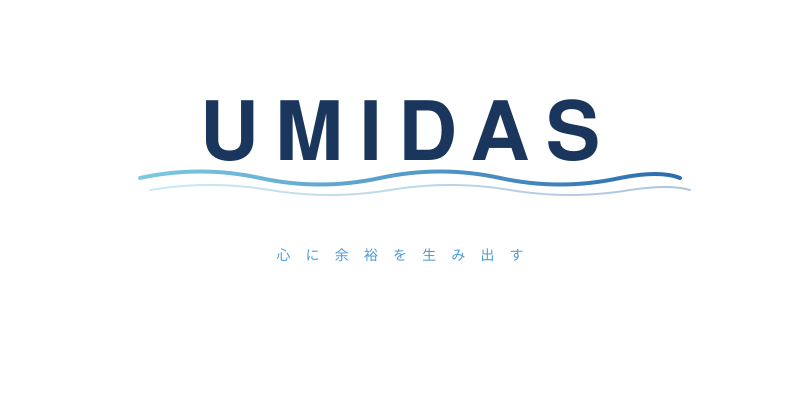
UMIDASの文字を横切る波ライン1本で、水のイメージを最小限に統合。最もミニマルなアプローチ。文字自体の力を信じ、装飾は波ラインのみ。名刺に最も映え、あらゆるサイズで破綻しない。
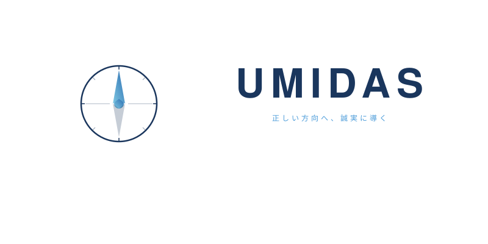
コンパスマークで「導く存在」を表現。クライアントを正しい方向へ導くナビゲーター。北の針が水色〜青のグラデーションで、上昇＝成功への方向を示す。コックピット社に近い固めのデザイン。
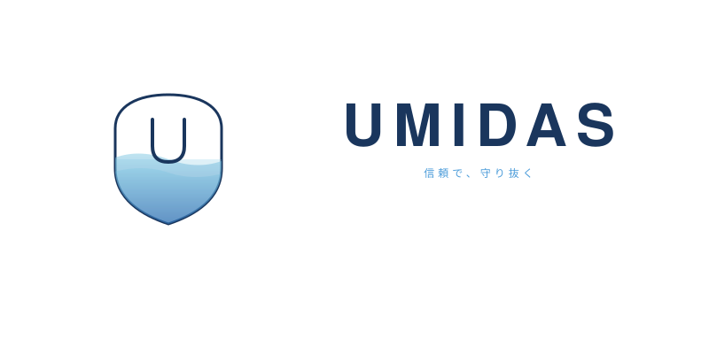
盾の中にU字と波を統合。信頼・守る・誠実の三要素を1つのマークに凝縮。金融・士業の顧客に最も刺さる「守りの信頼感」。盾の下半分が水で満たされ、心の余裕を表現。
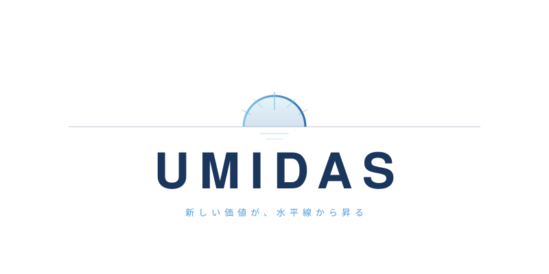
水平線と日の出のモチーフ。海面から新しい価値が生まれる瞬間を捉えた。UMIDAS（海+出す）の語源を最も直接的に表現。テキストを下部に大きく配置し、マークは控えめに上部で象徴する。
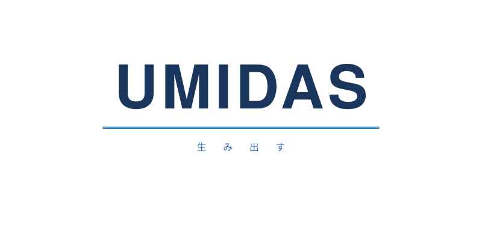
極太のUMIDASテキスト + 左のブルーアクセントライン + 水色〜青のアンダーバー。文字の力だけで勝負するミニマルかつ力強いデザイン。日本語「生み出す」を添えることで二言語の美しい対比を生む。
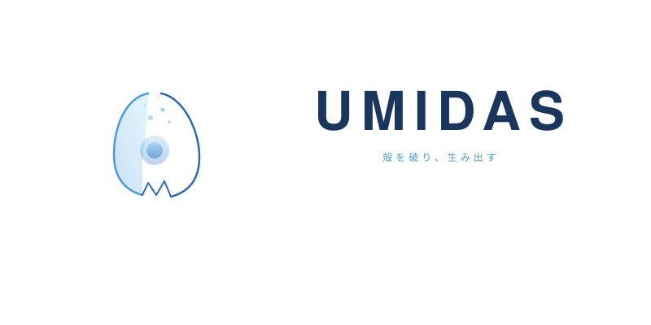
卵が孵化する瞬間をマーク化。社内文化の「新人＝卵、幹部＝海ガメ」と直結。殻を破って飛び出す粒子は、生まれる価値・可能性の象徴。「産み出す」の意味を最も直接的に表現。
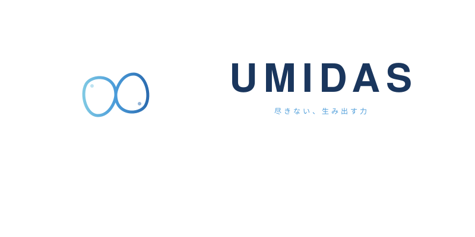
無限大（∞）を水流ラインで描いたマーク。持続的に価値を生み出し続ける循環を表現。∞は「心に余裕を生み出す」→「チャレンジ」→「成功」→「さらなる余裕」の無限ループ。
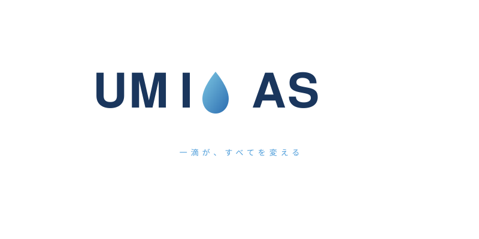
UMIDASの「D」を水滴形に置き換えたロゴタイプ。他の文字はクリーンなまま、Dだけが水モチーフに変わるさりげない遊び心。トライジン型の「文字の一部がデザインになる」アプローチ。
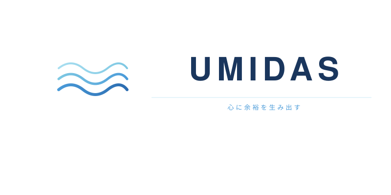
3本の波ラインが薄い水色→中間→深い青と重なる。水色〜青のグラデーション指定を最も素直に表現。波の太さも徐々に太くなり、信頼が深まる様を表す。シンプルだが記憶に残る。
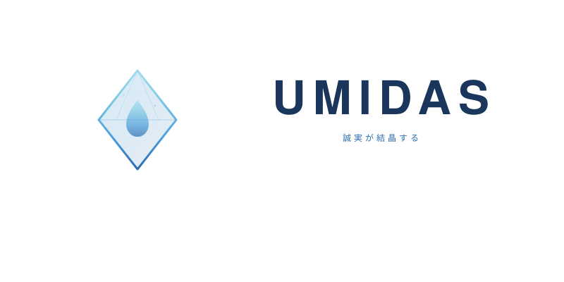
ダイヤモンド形の中に水滴を配置。誠実さの積み重ねが結晶＝ダイヤモンドになるというメタファー。カット面の線が知的な印象を与え、水滴が内部で輝く。高級感と信頼のバランス。
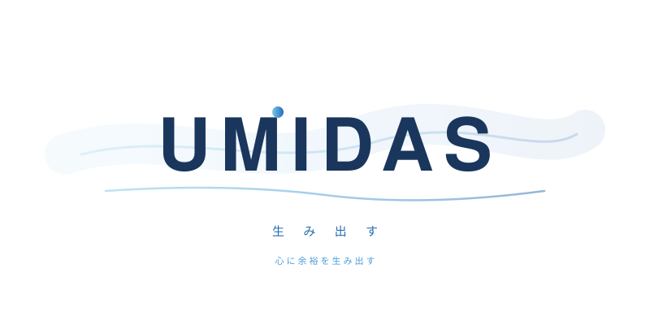
大きなUMIDAS文字の背景に海流カーブを配置。「I」のドットを水滴に変更し遊び心を加える。下部に波のアクセントラインと日本語「生み出す」。最もスケール感のある力強いデザイン。
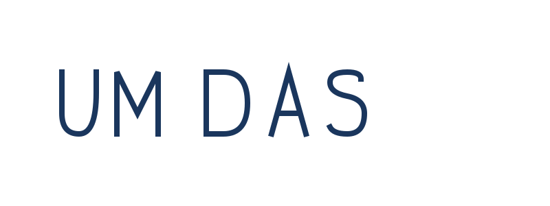
全ての文字を直線と直角で構成。工業的な精密さが誠実さ・信頼感を表現。「I」だけ水色〜青のグラデーションで色を入れ、全体の固さの中に1点のアクセントを生む。コックピット系の固めテイスト。
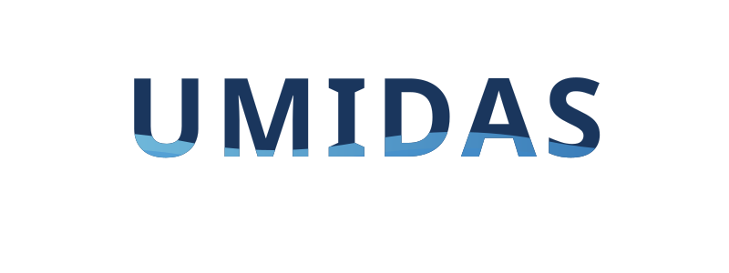
極太のUMIDAS文字の内部に波模様を埋め込む。上半分がネイビー、下半分が水色〜青の波のグラデーション。文字自体が海になるダイナミックな表現。Tシャツにすると圧倒的な存在感。
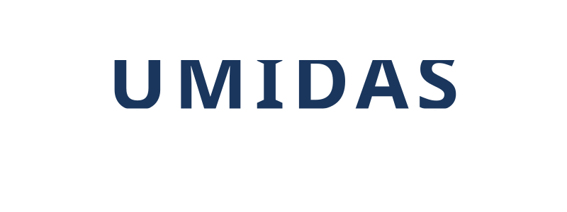
文字を水平に二分割。上半分はネイビー（誠実・固さ）、下半分は水色〜青グラデーション（優しさ・柔らかさ）。上野氏の「固さと柔らかさの両立」を最も直接的に表現した書体デザイン。
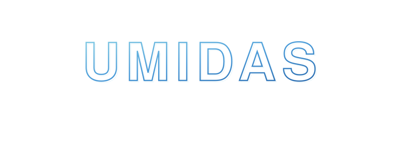
文字を塗りつぶさずアウトラインのみで構成。水色→青のグラデーションストロークが繊細さと洗練を表現。白い名刺に映える透明感のあるデザイン。ミニマリズムの極致。
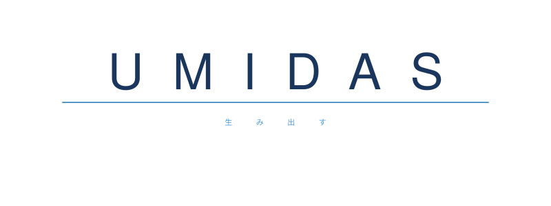
極端に広い字間＋細いウェイトで「心に余裕を生み出す」をタイポグラフィで直接表現。文字間の余白が呼吸感・ゆとりを生む。下部にグラデーションラインと「生み出す」を添える上品な構成。
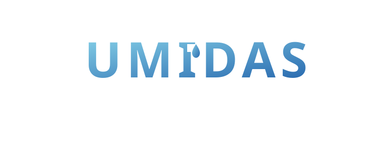
丸みを帯びた書体にフルグラデーションを適用。「I」のドットだけ水滴形に変更するさりげない遊び心。思いやり・優しさの表現と、グラデーションによる深みの共存。
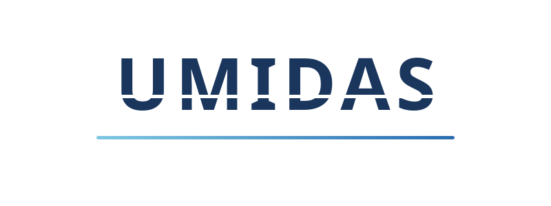
極太文字に2本の横カットラインを入れたステンシル風デザイン。ミリタリー的な力強さがありつつ、下部のグラデーションラインで水の要素を添える。Tシャツ・ユニフォームに最適。
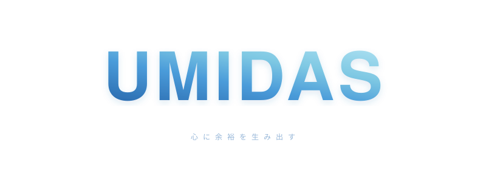
深い青から明るい水色へのグラデーションで文字全体を塗りつぶし、柔らかいドロップシャドウを添えた。シンプルだがカラーの美しさで勝負する王道アプローチ。あらゆる媒体に対応。
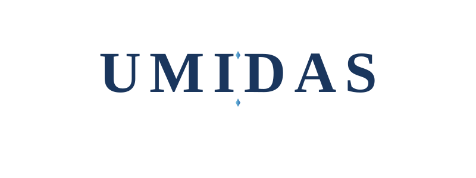
セリフ体（明朝系）で格式高い印象を与える。上下のヘアラインとダイヤモンド装飾で高級感を演出。金融・士業顧客への信頼感が最も高いデザイン。弁護士事務所や会計事務所にも並ぶ品格。
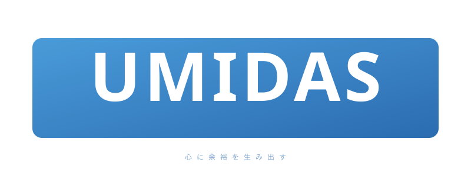
グラデーションの角丸背景から文字を白く抜く。ネガティブスペース（余白）で文字を生み出すデザインは、「UMIDAS=生み出す」のメタファーそのもの。SNSアイコンやバッジとして最強。
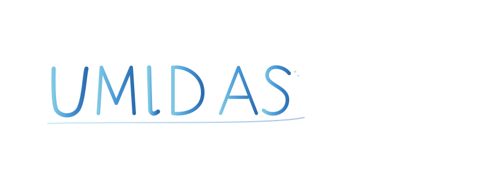
筆で一息に書いたサイン風ロゴ。力強さと勢いがありながら、水色→青のグラデーションで柔らかさも共存。下部のアンダーストロークがYohji的な洒脱さを加える。名刺の署名としても映える。
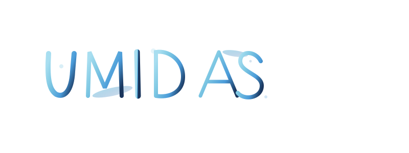
太い筆で力強く書かれた文字の周囲にインクの飛沫が散る。書道的な力強さとグラデーションの美しさの融合。飛沫は「溢れ出す」のメタファーとしても機能する。Tシャツにすると圧倒的存在感。
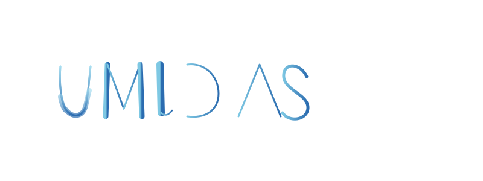
カリグラフィーの原則に従い、縦画を太く・横画/斜め画を細く構成。Yohji Yamamoto的な「太い/細いの極端なコントラスト」が特徴。Iのはね上げがアクセント。最もYohji的な一本。
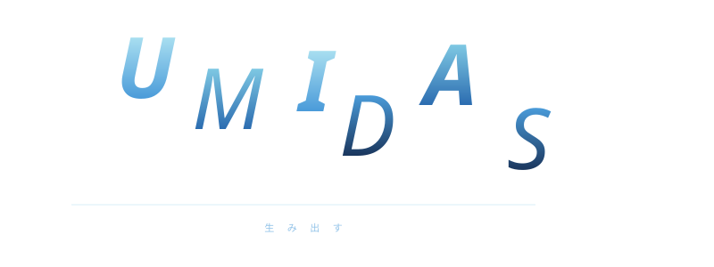
6文字をバラバラの高さ・異なるウェイト・各自のグラデーションで配置。脱構築（デコンストラクション）はYohji哲学の核。文字間の揺らぎが自然体・ありのままを表現。イタリック体で動きを加える。
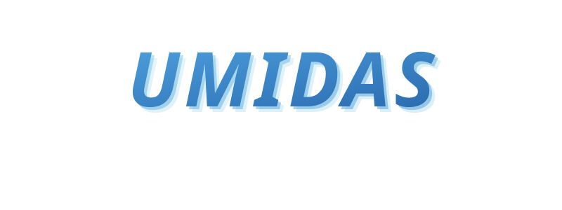
同じ文字を3層に重ね、各層が異なるグラデーション濃度。水が層になって重なるイメージ。薄い水色→中間→深い青の3段階が、満たされていく過程を表現。イタリック体で前進感。
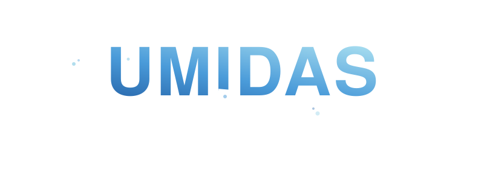
グラデーション文字の一部が欠けて粒子になって飛び散る。わび・さびの美学。完璧でないことの美しさはYohji哲学の真髄。欠損から飛び散る粒子は新たな価値の「生み出す」瞬間。
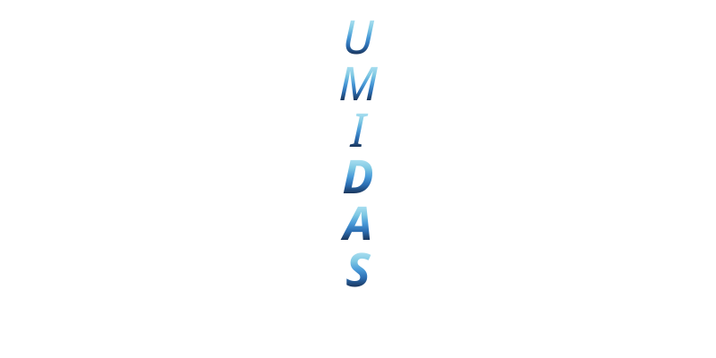
6文字を縦一列に配置。上から下に向かってウェイトが太く・色が濃くなるグラデーション。水が降り注いで溜まっていくイメージ。イタリック体で流れを生む。ポスター・看板で圧倒的な存在感。
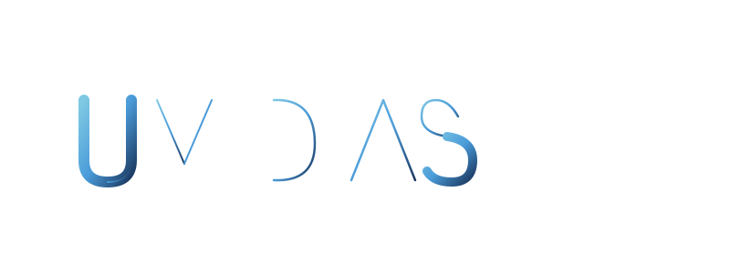
各文字の縦画を極太、横画/カーブを極細に。Yohji的なハイコントラスト書体をSVGパスで構築。グラデーションが極太部分で特に美しく映える。カスタムレタリングの最高峰。
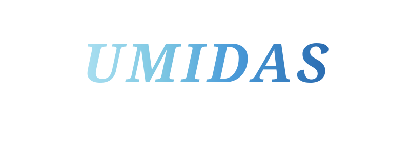
セリフ体イタリック+フルグラデーション+ヘアライン装飾。ファッション誌のロゴのような品格とモード感。Yohjiの招待状やルックブックのタイポグラフィに通じるエレガンス。
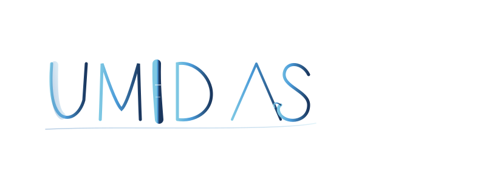
荒々しい筆タッチにかすれ・にじみ・はね・太さの揺らぎを全て表現。最もYohji Yamamoto的なロウ（生）な表現。太い縦画と細い横画のコントラスト+グラデーション+サインのストローク。
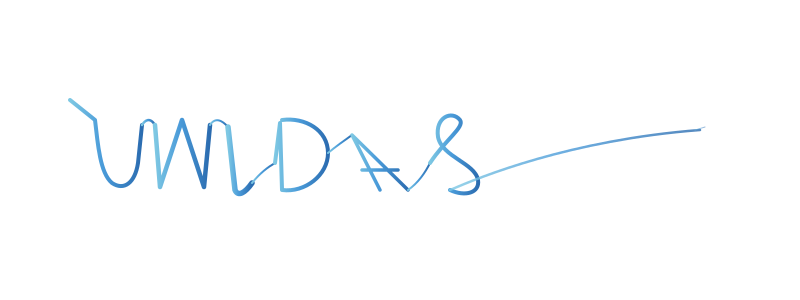
各文字が細い繋ぎ線で連結。鋭い入り＋太細の変化＋Sから伸びる長い水平フィニッシュストローク。Yohji的な洒脱さを持ちながら全文字が明確に読める中間バランス。
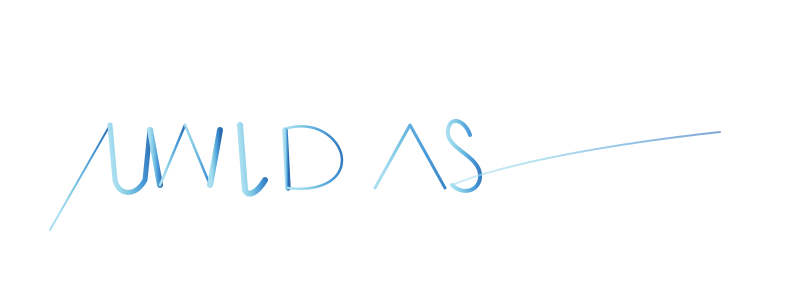
Yohji画像の最大特徴「左下からの鋭い斜め導入線」を再現。そこからUMIDASが始まり、Sの後に長い水平ストロークで締める。縦画が太く・斜め/カーブが細い筆圧コントラスト。
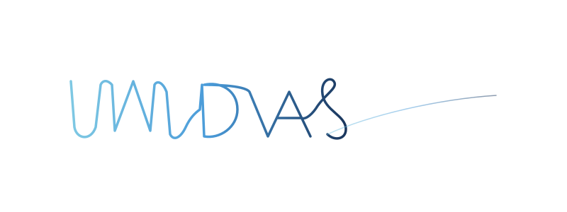
UMIDAS全体を1本の連続したパスで構成。筆を紙から離さず書ききるサイン。途切れない線＝途切れない誠実さ。最も筆記体寄りだが各文字の骨格は保持。
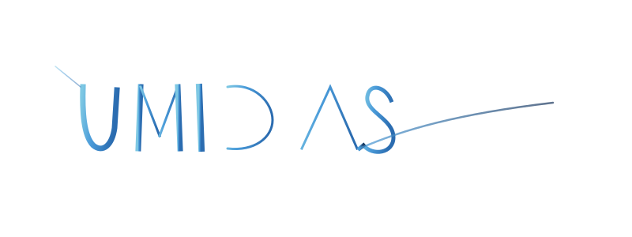
平筆で角度をつけて書いたような文字。縦画が太く・横画が細いのは書道の平筆と同じ原理。各文字は独立しているが、左上の導入線とSからのロングテールでYohji的な流れを作る。最も読みやすい寄りのバランス。
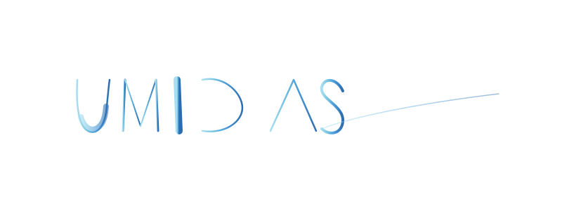
各ストロークの始点と終点が細く、中央が太い。呼吸するような筆圧の波。Iが最も太い「筆圧のピーク」として全体のリズムを作る。繊細なグラデーション（水色→淡い→濃い青）。
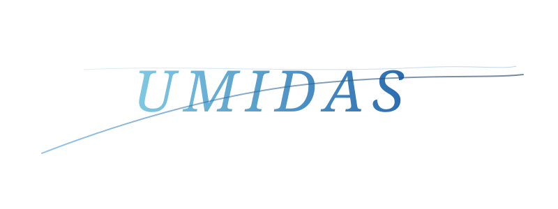
読みやすいセリフ体イタリックの上に、Yohji的な長い斜めストロークが横切る。フォント書体＋手書きストロークのハイブリッド。最もバランスの取れたアプローチ。
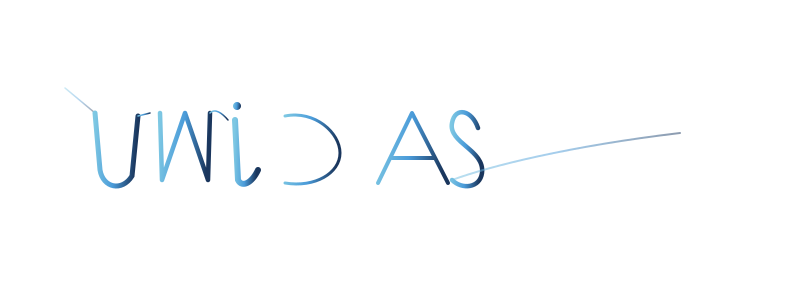
読みやすさ寄りの手書き文字。一部が繋がり一部が離れている自然なリズム。Iのドットを水滴に。導入線とフィニッシュストロークでYohji的なフレームを作る。最も「中間」に位置するデザイン。
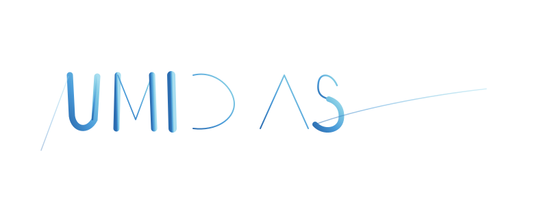
Yohjiサインの核心＝太細の激しいコントラストを、読みやすいフォルムで再現。縦画/横棒が極太、斜め/カーブが極細。深い青→水色の逆グラデーションで新鮮な色彩。導入線+ロングテール完備。
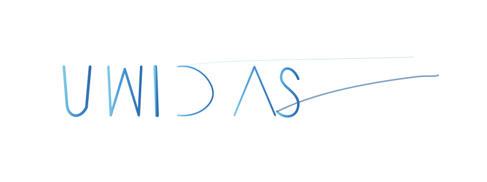
セリフ（ひげ飾り）付きの手書き文字。Iのセリフやフィニッシュの2本のストローク（上下）がYohji的な構図を作る。品格とストリート感の共存。名刺映え最強。
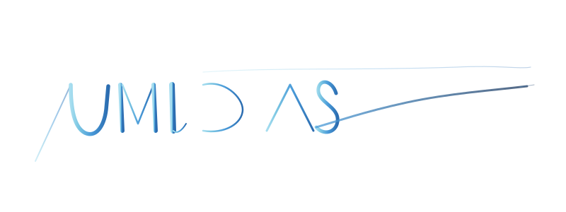
Yohji Yamamoto画像の3大要素を全て搭載：(1)左下からの鋭い導入斜線 (2)太細コントラストの読みやすい文字 (3)Sから伸びるロングフィニッシュ+上部の補助ストローク。4段グラデーション。
丸みのあるU字の器から小さな水滴が溢れ出す。水滴が可愛さを、U字の安定感が誠実さを表現。丸ゴシック系テキストで優しい印象。リクルート/サイボウズ的な親しみやすさ。
グラデーション円の中に白抜き水滴。メルカリ/サイバーエージェント的なシンプルで記憶に残るマーク。アプリアイコンにそのまま使える。可愛さと信頼感のバランスが最も良い。
角丸四角の中にU字と水滴ドット。LINE/SmartHR的なアプリファースト設計。四角の安定感＝誠実、角丸＝優しさ、ドット＝可愛さ。ファビコンやSNSアイコンとして最強。
2つの弧が寄り添うように並ぶ。NTT/ソフトバンク的な抽象シンボル。水色の弧と青の弧＝2つの価値の共存（誠実さと優しさ）。右に行くほど薄く＝可能性が広がっていく表現。
丸ゴシック系の太字に4段グラデーション。Iのドットを大きな丸に変えて可愛いアクセント。freee/Sansan的なテキストオンリーの潔さ。あらゆるサイズで破綻せず、最も実用的。
文字の下に笑顔の口のようなウェーブライン。上部の2つのドットで顔に見える仕掛け。楽天/マネーフォワード的な親しみやすさ。「心に余裕を生み出す」＝笑顔になれる、の直接表現。
大小2つの水滴が寄り添う。大きい滴（青）＝UMIDAS、小さい滴（水色）＝クライアント。寄り添って一緒に歩む誠実さ。ハイライトが可愛さを加える。リクルート/エン・ジャパン系。
上部が開いた円から水滴が飛び出す。成長を止めない、可能性が溢れ出すメタファー。マネーフォワード/Chatwork的なオープンさ。円の太いストロークが安定感＝誠実さ。
葉っぱと水滴が融合した有機的なマーク。内部の葉脈が成長を、外形の水滴が「生み出す」を表現。ユーグレナ/トヨタ系の自然モチーフ。優しさと誠実さを両立するナチュラルデザイン。
水色・中間色・青の3つの円が重なり合う。誠実・優しさ・可愛さの3つの価値。freee/Wantedly的なシンプル&カラフルなマーク。大きさと位置の違いが遊び心を生む。
丸ゴシック系の太字に薄い水色→濃い青の5段グラデーション。可愛さと誠実さのバランスが最もよい書体。freee/SmartHR的な親しみやすさ。
Montserrat ExtraBoldに淡い水色→紺の5段グラデーション。角のある書体で誠実さ・信頼感を出しつつ、色の幅で優しさを表現。
左下（濃い青）→右上（薄い水色）の斜めグラデーション。上昇感があり、成長のメタファー。太い丸ゴシックで安定感も維持。
細字+極端に広い字間+薄い水色→紺の6段グラデーション+下部ヘアライン。余白＝心の余裕。上品でおしゃれ。名刺で最も映える。
上（薄い水色）→下（濃い青）の縦方向グラデーション。水が上から降りて溜まる＝満ちていくイメージ。文字の上部が明るく軽やかで可愛い印象。
左が最も濃い紺（#0F2B4A）→右が最も薄い水色（#D6EEF9）。色の幅が最大。Uが力強く始まりSが優しく溶けていく。「誠実さから優しさへ」の物語。
両端が濃い青、中央（I・D付近）が明るい水色に輝くシンメトリーグラデーション。中心＝コア＝「心に余裕を生み出す」が最も明るく輝く。
セリフ体イタリックに薄い水色→紺の6段グラデーション。ファッションブランド的な品格とワイドグラデーションの美しさ。最もおしゃれ。
丸ゴシック太字+5段グラデーション+柔らかいドロップシャドウ。影が立体感と優しさを同時に演出。最も「上場企業のコーポレートサイト」に馴染む。
塗りは極薄、アウトラインに薄い水色→紺のワイドグラデーション。繊細で透明感のある表現。名刺やレターヘッドで上品に映える。